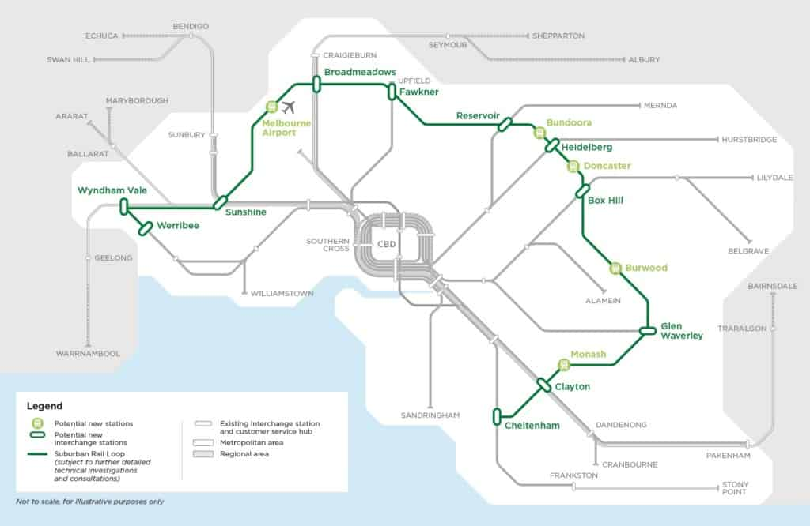

Melbourne Suburban Rail Link preliminary routeI spent some time last year planning a piece for a commercial media client about the Melbourne Suburban Rail Loop, a planned underground rail tunnel through Melbourne’s eastern suburbs and then out, partly above-ground, to the west. I had to drop the piece when my client's funding drained away under the pressure of COVID. At the time, my digging had produced a few pieces of the story, most of them not sufficiently confirmed to warrant publication. If you're one of the people who wasted time talking to me about it, on or off the record ... sorry. Your sole reward is this Troppo post.
Anyway, now three journalists from The Age, led by the dogged Timna Jacks, have published a long and detailed story about the project's strange origins that outstrips what I would likely have produced. This 3000-word article jibes with what I was told, while revealing far more detail than I could gather. It must have taken a long time to write, and my assessment is that it's very well sourced. It's good to see The Age pursuing this sort of journalism under editor Gay Alcorn. I really recommend you read it, not just as a story of Melbourne but as an account of modern governance.
Poor bang for the buck
I’ve long been sceptical about the Melbourne Suburban Rail Loop. That's not just because the Loop doesn’t match any of the work done on Melbourne’s transport needs over the past 30 years, but also simply because it seems to offer poor bang for the buck.
Often when I do a detailed investigation of a project, some of my initial scepticism subsides as I see new aspects of the problem it’s trying to solve.
In this case, my scepticism long ago turned to amazement that Victorian premier Daniel Andrews had tied himself to such an oddly-conceived project. More than once I sat back and wondered to myself: just what was he thinking?
The obvious problem: tunnelling under Melbourne's spread-out middle suburbs to create just 15 stations gives us an unreasonably small population catchment, at enormous expense. One planning consultant, Alan Davies, has described the proposal as "preposterous" and "cynical".
But I was told off the record by three separate sources that Andrews “just loves it”. People who talked seemed mostly convinced that his enthusiasm, more than anything else, has driven the Melbourne Suburban Rail Loop.
Poor governance
Here's something even odder: the initial outline of the Melbourne Suburban Rail Loop was designed not in Victoria's Transport Department, but in a government housing authority, Development Victoria. The tiny project team was led by a bright young former ALP staffer, Tom Considine, and a veteran ALP-connected business figure, James MacKenzie. This is why I described it above as "oddly-conceived".
Among the oddities reported by The Age:
- Most Cabinet ministers were "kept in the dark" about the project until its announcement.
- The director-general of the Major Transport Infrastructure Authority had to sign a non-disclosure agreement that required him to conceal the project from his boss, Department of Economic Development, Jobs, Transport and Resources secretary Richard Bolt.
- Bolt and the head of transport, Gillian Miles, both left soon after the announcement of the Loop.
- The first mention of the project in Development Victoria board correspondence was the morning of the announcement.
- Consultants suggested a lengthy planning and consultation process for a 2026 start; Premier Dan Andrews decreed construction would start in 2022 instead.
The Melbourne Suburban Rail Loop seems intended, like several schemes before it, to promote “precincts” or clusters of expertise at some distance from Melbourne’s CBD. That's a potentially worthy aim. But our knowledge of how to create such precincts is thin, and government precinct-creation successes are rare. None of those uncertainties deterred Considine and MacKenzie.
A huge price tag
Nor were Considine and MacKenzie deterred by cost. The initial price tag at the announcement was “up to $50 billion”. In truth, though, the commonest figure I heard in association with the project was "more than $100 billion". Since academics studying the area tend to find that rail projects suffer greater cost blowouts than any other project type, this is not surprising. Project promoters intentionally underestimate the costs to muster the support of politicians.
In a 2014 book, Bent Flyvbjerg – one of the world's best-known infrastructure project management experts – quotes a former San Francisco mayor, Willie Brown, on how this process usually goes:
"In the world of civic projects, the first budget is really just a down payment. If people knew the real cost from the start, nothing would ever be approved. The idea is to get going. Start digging a hole and make it so big there’s no alternative to coming up with the money to fill it in."
"The cost blowout on that thing will be monumental," said one person I spoke to. To my knowledge, Daniel Andrews no longer cites the $50 billion cost figure.
In other words, this is now potentially a $100 billion-plus project. Even if the cost somehow remains controlled, it will be the biggest infrastructure project in Australian history.
Short on city-building expertise
Remarkably, despite that huge price, the Melbourne Suburban Rail Loop has been conceived without real city-building expertise.
Melbourne is doggedly monocentric. Its suburban precincts are far less developed than those of, say, Sydney. There's a reasonable case – though not a fully-formed one – that this needs to change as Melbourne's population grows beyond five million. So the Rail Loop might be worth considering if the project team could call on a deep pool of transport, urban and financial expertise and get strong benefit-cost estimates.
But none of that seems to have happened before the announcement, and it's not clear that it has happened yet – or that it ever will.
What Victoria has right now is a scheme to bring the smallest possible number of people to what are so far relatively small middle-suburban precincts, using a disproportionate amount of time and money, and without any independent confirmation of the scheme's merits. The project is not part of any integrated transport plan; as Jacks' fellow reporters Chip Le Grand and Paul Sakkal have reported elsewhere, the state has none. The government’s infrastructure assessment body, Infrastructure Victoria, appears to have been sidelined from any review of the project. There's been no federal funding application yet that would trigger an Infrastructure Australia review. “It looks ridiculous, really,” one person familiar with the proposal told me.
It’s ridiculous not just on classical cost-benefit grounds, but also as a city-shaping initiative. If you really wanted to build up suburban business and knowledge precincts, you’d concentrate on delivering transport to them from the surrounding ten kilometres, using trams and buses and roads and cycleways. Instead, the government wants to build a huge underground railway which will have perhaps 15 stations along its 90-kilometre length. This railway will touching on two or three promising clusters of activity – notably Monash University and the built-up area of Box Hill – but also serve less knowledge-rich suburbs like Cheltenham, Heidelberg and Fawkner.
Hard numbers
Now, somewhere in Melbourne, a team of people is trying to turn this idea into what the premier calls an “investment case”. It will probably require a huge amount of state government money, well above what passengers will pay to use it.
If you had $100 billion to develop Melbourne’s promising suburban precincts, you could actually do quite a lot. But the Melbourne Suburban Rail Loop won’t do much of it. And it will mean borrowing a truly huge amount of money. For comparison, Victoria's annual gross state product is around $470 billion.
Now that COVID-19 has blown a hole in the state’s finances, the whole mess looks less likely to be completed. COVID actually gives Andrews the perfect opportunity to call it off. But he shows no signs of doing so. That task seems more likely to fall to a successor.
Update 1, 24/11/2021: The business case has now been delivered. It might best be described as "fragile". More by me here.
Update 2, 4/4/2022: The Victorian Ombudsman will investigate whether the state’s public service has been undermined by the hiring of former political staff for non-political positions.
Update 3, 10/2/2023: Victoria's Parliamentary Budget Office has estimated the cost of building the first leg of the Melbourne Suburban Rail Loop will be $33 billion. At a 7% discount rate, the PBO estimated the benefit-cost ratio for the first leg at between 0.6 and 0.7 – which is to say that the benefits are far less than the costs.
Update 4, 12/9/2024: Belated, I know, but a December 2023 report by Victorian Ombudsman Deborah Glass tended to confirm the problems described above. She said the Loop was created with 'excessive secrecy' and the public could 'reasonably question' whether it was the best use of taxpayers’ money.
Interesting story. The SRL certainly appears to be a poorly thought through idea. And, as many have said already, adding to an already large number of megaprojects is just causing more price gouging in construction. No wonder Andrews' Twitter image has him in hi-vis. It seems the only economic activity he does support is major project construction.
Amazing work Tony. Thanks. So, according to your figures it will cost $15,000 per Victorian head??? That is way more than Joe Biden's infrastructure bill.
“Just what was he thinking?” Could it be politics? He rightly killed off the completely corrupt East-West link but then had to pay a billion dollars compensation when he promised that he wouldn’t. He needed a project that would be the ALP alternative. You have to cut ribbons and wear a hi-viz vest if you are going to be a long-lived polly.
I assume that the experts agree with the idea of radial transport? We already have radial freeways though. Would priority lanes for busses not be an feasible alternative? But, as you suggest, local transport networks focussed on several hubs are a completely different model for decentralising.
There are so many reasons to vote against Dan Andrews. I think that he is, without a doubt, the worst Premier in Victorina history including Heny Bolte. The problem is that O'Brien (the guy who bribed the East-West consortium) is even worse. Victoria is in a real funk atm.
Thanks for that David. Pretty depressing …
Chris, you may be correct that Andrew just wanted a really big infrastructure project. But ...
... There are people who really do believe Melbourne needs to become less radial/monocentric, with less of the city's transport task centred on the CBD. Sydney, for instance, has a second centre at Parramatta. Melbourne's non-CBD centres, Box Hill and Monash University, just don't compare. Andrews adviser (and former Rudd adviser) Terry Moran, mentioned in The Age's story, is reportedly one of those concerned about this.
Such a concern is in my view quite defensible, even though I do not currently think it is actually right.
But basing policy on this monocentric->multicentric shift has problems. Among them are these:
1) I can't think of a city where it has been successfully done by government action.
2) I doubt this is the way to do it, as do many urban thinkers. If you want to build up Box Hill, wouldn't you do things like create a network of buses centred on Box Hill Central, rather than a train from Cheltenham?
This excellent piece from the previous day explains the background of the Andrews Government and goes some way to explaining the context in which it is happening. My guess is that how far the loop goes depends almost entirely on how long Andrews survives - https://www.theage.com.au/politics/victoria/the-chosen-few-how-victoria-is-really-governed-20210803-p58fk4.html
Thanks David. Anne and I love Melbourne and regret that interstate travel in Australia is off the agenda. The Perth underground rail connection to the airport is a difficult engineering project but appears to make sense in the long term. In Melbourne the lack of consensus and consultation that you describe does not bode well.
I too have a soft spot for grand projects that don't pass basic CBA — but not the ones such as this one which just look like they're good on a map.
I'm thinking of the tunnels from Sydney CBD and the airport and the Channel Tunnel for which there seems like an obvious case with lowish discount rates which one might go about justifying on various grounds.
This thing just looks like a turkey — and the process by which it was arrived at should lead to the extinction of the government that did it. Sadly the only way to bring that about is to vote in something even worse.
very interesting, thanks. And indeed, well done on the Age to do such an investigation. Journalism as we like to see it!
Game of Mates all the way, it seems. And a (self-inflicted) national disaster to provide cover as well.
I'm not sure how much it's Game of Mates as opposed to the cult of announceables.
I agree Nick. I don't know who to vote for. I consider DA just awful in almost every way. But with Michael O'Briens history, there is no way to vote for him either. I often vote for minor parties but in the lower house at least, your main decisino is which of these two clowns' parties to out higher. Perhaps the good old dick and balls vote?
No — it's funny that we're having this debate here, when I'm arguing similar things with Paul on another thread — in short how 'consequentialist' should one be.
I'm not very enamoured of consequentialism as a philosophy in my private life — for various reasons I won't go into here — but in voting, I've always held myself to the standard of trying to choose the lesser of two weevils.
That Canadian guy seems on the money :Australians love things that cost shirtloads. Perhaps it’s simply about status: the biggest most expensive, in the Southern Hemisphere?
One factor that popped up in a recent Marion Terrill webinar for the Grattan Institute is that very low interest rates have done for infrastructure what they have done for house prices: they've allowed the buyers to spend much more. It's amazing how many people now seem willing to overlook the potential financial repercussions of creating a low-payoff $100 billion asset whose funding will be borrowed over 20 years. One complication: interest rates could stay low for the next 20 years, or they could rise substantially. Right now, no-one seems to be considering the less cheery scenarios.
Yes agreed, though you can offload the risk to the market if you can fix.
Well low interest rates do mean more projects likely to meet CBA tests. Infrastructure Australia apparently still uses 7% real discount rate which seems ridiculous to me.
It was announced as a stunt on the same day Labor quietly sold the Vic Titles office. it was a distraction stunt. Heard it from several inside govt sources at the time. And it worked- sucked up all the media oxygen and the Titles office privatization sailed through.
Bizarre thing to privatise.
The Victorian Land Titles and Registry office was sold to First State Super – which is already part-owner of the privatised NSW land titles registry. The SA registry has also been privatised. All seem to be monopoly service providers.
The Vic sale essentially capitalises most of the office's forward revenue stream so that the government can spend it now. The move was justified by the state's treasurer as "asset recycling". The asset also reverts to the state after 40 years, so there's that, at least for the moment. My guess is that not many people would have objected, just because no-one is emotionally invested in the Land Titles and Registry office.
The Victorian Land Titles and Registry office still seems at first glance to be an asset remarkably ill-suited to privatisation. Riders:
- The title boundary system apparently remains in public hands. I'm not sure what the boundaries of this are (pun not intended).
- The sale of aggregated data out of the database does have some value which may be best realised by a private-sector owner. See this ABC article:
https://www.abc.net.au/news/2017-08-10/lands-titles-privatisation-highlights-value-of-big-data/8794912. But on the info available, I suspect this aspect is being overplayed.
I still regard the deal as suspect, but I don't have time to understand the details. A not terribly thorough parliamentary enquiry did report:
https://www.parliament.vic.gov.au/images/stories/committees/SCEP/Land_Titles/EPC_58-12_Text_WEB.pdf
One of the ironies of this episode is that these assets raised as much (inflation-unadjusted, mind) as some of the Victorian power stations did in in the 1990s. But whereas those were sold after an exhaustive process of pro-competition market and regulatory reform and with detailed media scrutiny (some of it by yours truly), the Land Titles and Registry office was sold with little scrutiny of the arrangements.
It is bizarre of course but not really too surprising when they're desperate for any cash they can get. Just after Covid started, Stephen Mayne made the comment that Daniel Andrews would be caught out on the budgetary front following firies' deals etc etc. But Covid seems to have postponed that day of reckoning. Remember hearing of Cain hospital sale dodgy deal clean up in the Kennett years (not that they didn't need cleaning up too - just different types of dodgy deals).
Re the data, sorry don't agree that the private sector will get more money for it is any form of justification. The key to how much you make is what privacy restrictions are put on it. My guess (without any knowledge) is that they took the restrictions off to maximise the sale price and that we will all pay in the longer term. Now that data is worth money, Governments don't seem to worry so much about implications for citizens.
I heard from several people inside the Vic govt (Dept. of Premier and Cabinet) that the (very noisy) suburban rail loop announcement was brought forward to coincide with the announcement of the (very quiet) Titles office sale.
Obviously, both projects had been in the works for a while, but the announcement of the Suburban rail loop was deliberately timed to take all the media oxygen away from the disastrous Titles Office sale. And it worked. The media were totally distracted by the rail loop, and there was virtually no discussion of the titles office sale.
I've written a few other things about the dodgy Andrews govt privatizations here:
http://owlknot.com/uncategorized/andrews-govt-cons-media-as-usual/